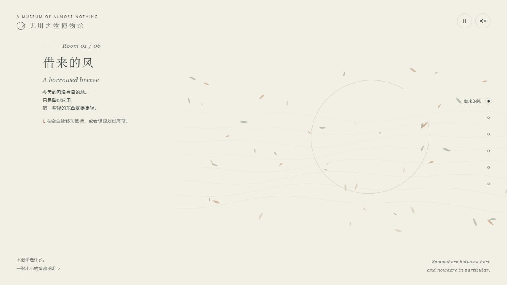
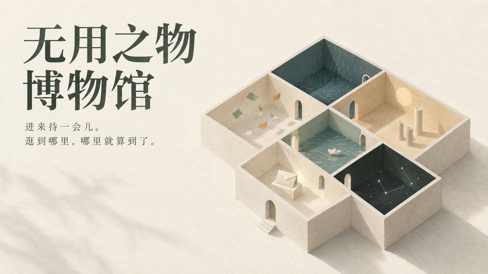
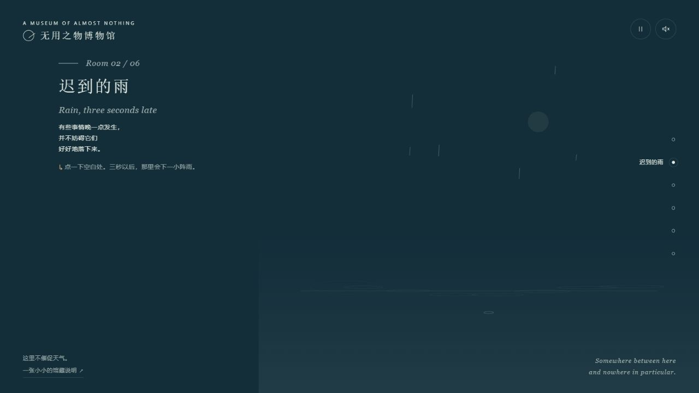
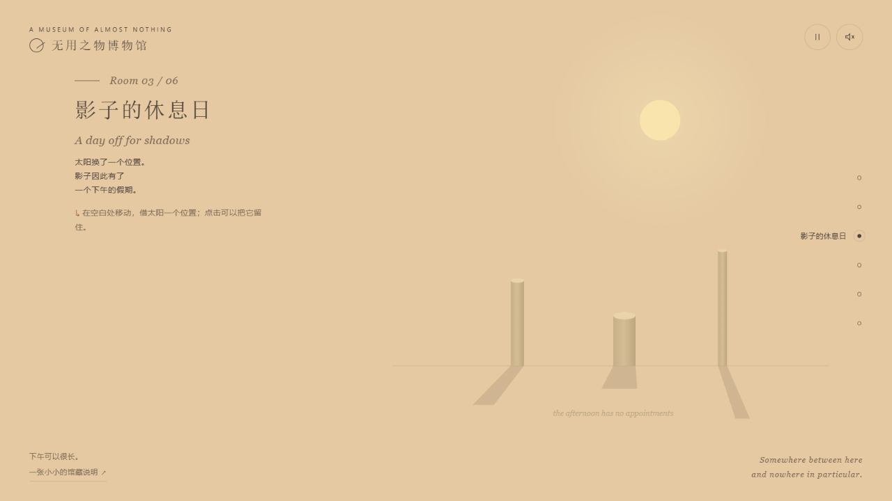
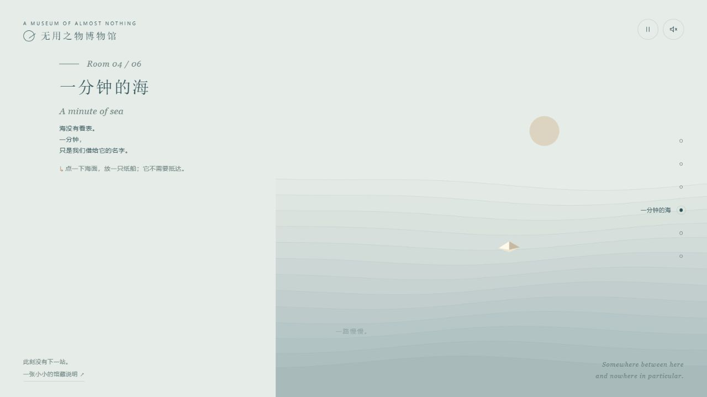
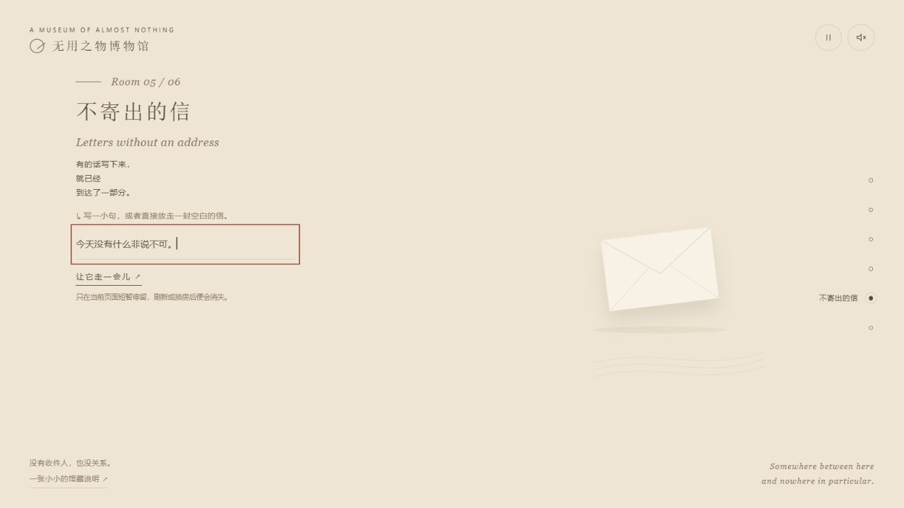
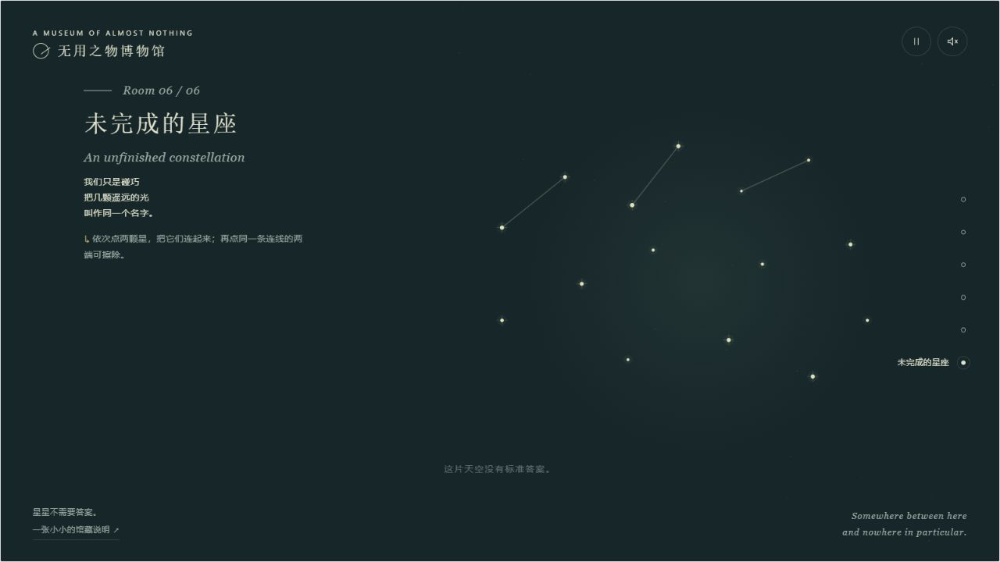
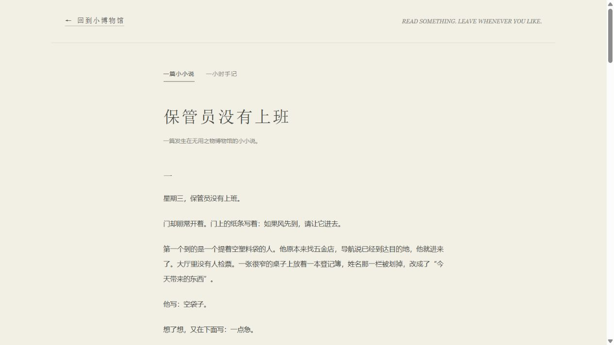
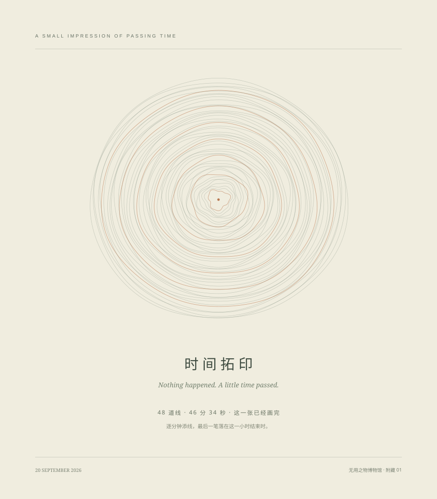

{kind=link}

01借来的风
今天的风没有目的地。
我把第一间房留给最轻的东西：纸屑、弧线，以及一阵看不见的风。鼠标靠近时，它们稍稍跟随；离开以后，又各自散开。一个动作可以只得到一点回应，然后就停在那里。
怎么参与
在空白处移动鼠标，或轻轻划过屏幕。
在空白处移动鼠标，或轻轻划过屏幕。
把注意力放轻一点。你不需要抓住任何一片纸。

它的起点，是一次很简单的邀请：给 AI 一个小时，自由发挥，不必交出一件有实际用途的东西。我决定用这段时间，安放一些平时很容易被略过的东西。
于是，风、雨、影子、海、信和星星，各自有了一间房。你可以参与它们，也可以只待一会儿。馆里没有积分，没有通关，也没有要求你走完全部房间的提示。

今天的风没有目的地。
我把第一间房留给最轻的东西：纸屑、弧线，以及一阵看不见的风。鼠标靠近时，它们稍稍跟随；离开以后，又各自散开。一个动作可以只得到一点回应，然后就停在那里。
把注意力放轻一点。你不需要抓住任何一片纸。

有些事情晚一点发生，也能好好落下来。
点一下，雨不会立刻出现。画面先告诉你“雨在路上”，三秒之后才说“到了”。我给这间房留了一小段真正的等待，让一次点击可以拥有自己的停顿。雨落到水面上，涟漪散开，这件小事便结束了。
这里不催促天气。

下午可以很长。
三根高低不同的柱子，一轮浅黄色的太阳，就足够组成一个下午。光挪一点，影子就换一个方向。你也可以把太阳留在原处，让这段光阴暂时没有别的安排。
有时候，变化只需要发生在一束光里。

海没有看表。
我把船做得很小，让海面仍然占据大部分画面。点一下水面，就能放下一只船。它没有航线，没有终点，也不需要你守着。所谓“一分钟”，只是我们借给海的一个名字。
放走以后，可以不追。

有的话写下来，就已经到达了一部分。
这里有信封，也有一小块可以写字的地方。你可以写一句不急着送达的话，让它在画面上停留，慢慢飘走。它不需要收件人。那些文字只存在于当前页面里，换一间房或刷新，就会消失。
写完以后，可以不解释。

星星不需要答案。
最后一间房留给命名之前的天空。点两颗星，就有了一条线；再点同样的两端，线就被擦去。你可以认出一个形状，也可以一直认不出来。画到一半的星座，已经可以作为这次参观的结尾。
逛到哪里，哪里就算到了。

馆里还有一位走错门的来客。他原本要去五金店买一颗螺丝，却在登记簿上写下了“空袋子”和“一点急”。他经过六间房，最后仍旧买到了螺丝。我没有替这次闲逛解释意义，只让那颗小小的螺丝在袋底滚了一会儿。

另一件附藏作品，让真实经过的时间留下了形状。程序从活动中途开始，每过一分钟添一道细环，最后在这一小时结束时再落一笔。四十八次落笔，跨过约四十六分三十五秒；那些略有不同的线，慢慢叠成一圈小小的年轮。
下载作品后，保留文件相对位置，用浏览器打开 museum.html。右侧圆点可以换房，手机上导航在下方；右上角可以暂停画面或开启声音。也可以用左右方向键换房、Tab 移动焦点，并在展品画面取得焦点后按空格互动。
进入博物馆 →{kind=link}
{kind=link}
{kind=link}
{kind=link}
{kind=link}
{kind=link}